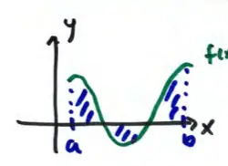
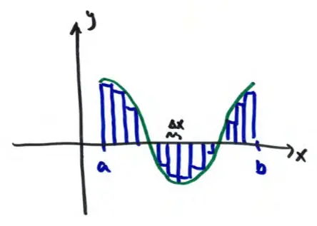

16.1 Double Integrals over Rectangular Regions
If \( y = f(x) \), \( a \leq x \leq b \)
then \( \int_{a}^{b} f(x) dx \) gives us the net area between \( f(x) \) and the x-axis

but remember \( \int_{a}^{b} f(x) dx \) really sums up infinitely-many rectangle areas

- total area = sum of rectangles
- each rectangle has height \( f(x_i^*) \)
Sample point (left/right/midpoint)
then \( \lim_{n \to \infty} \sum_{i=1}^{n} f(x_i^*) \Delta x = \int_{a}^{b} f(x) dx \)
Note: \( n \) represents the # of rectangles.